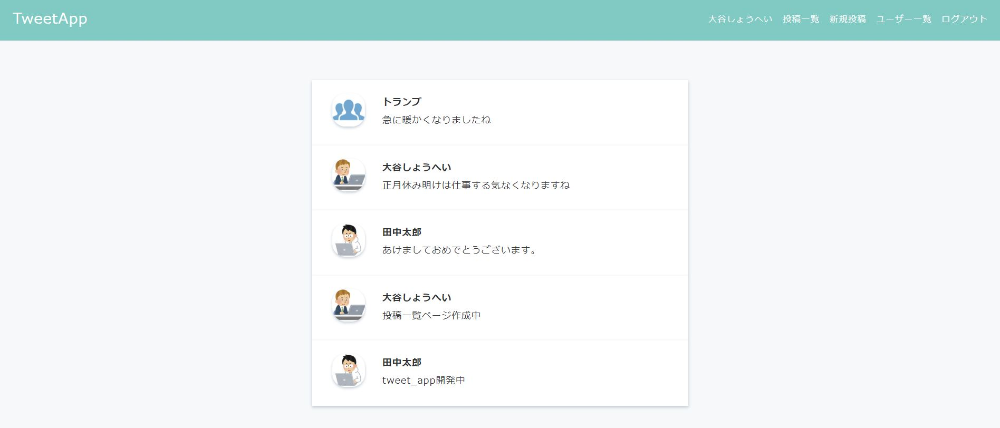
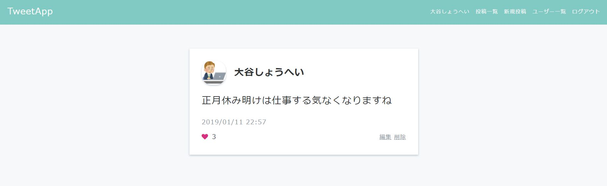
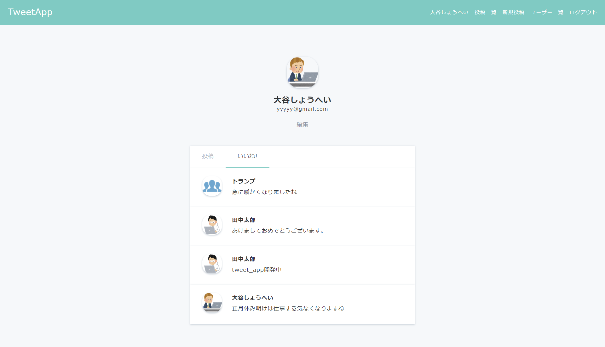
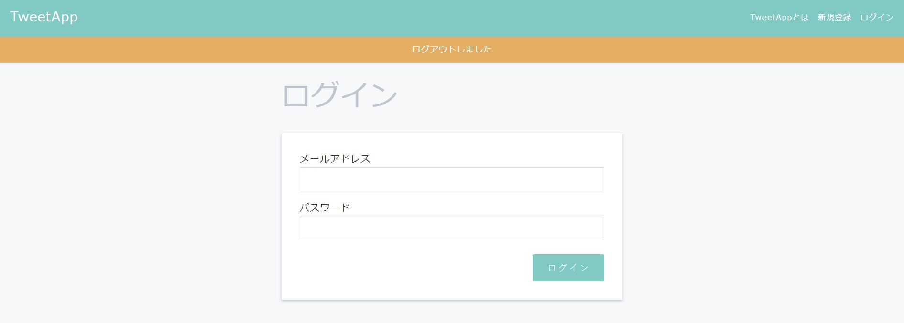
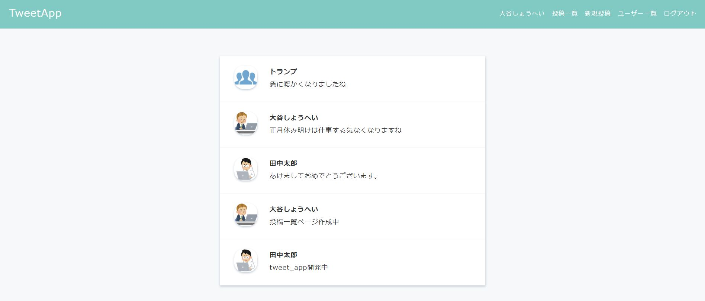
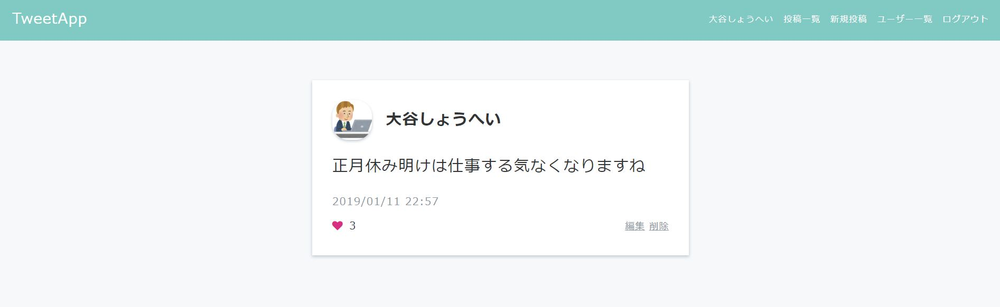
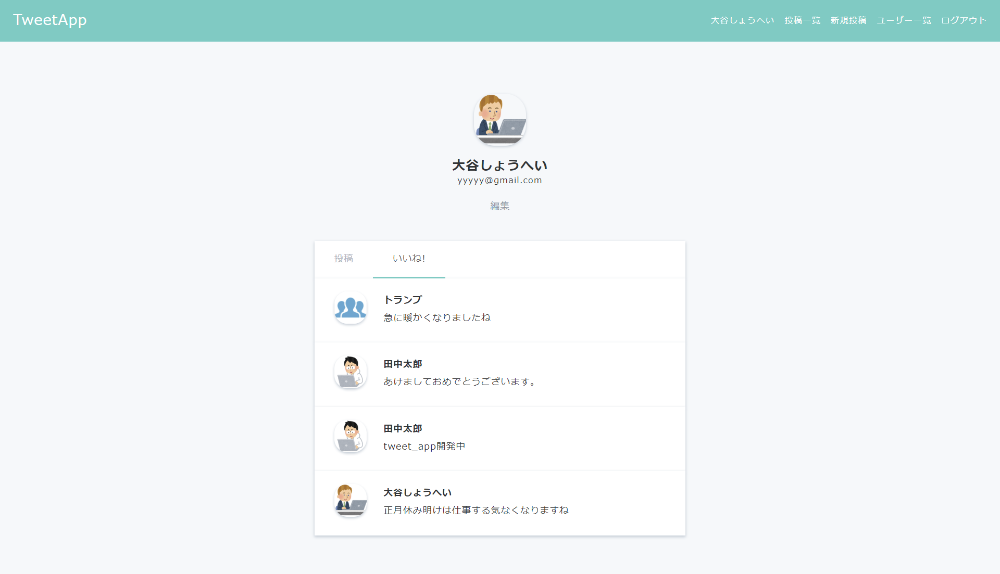
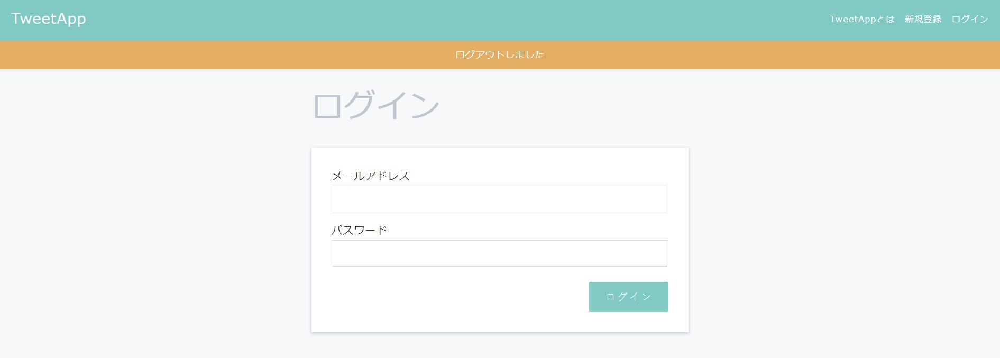

開発概要
完成イメージ
Ruby on Railsを使って、TwitterのようなSNSサービスを開発してみましょう！




◆投稿の作成・編集・削除
◆ユーザー登録・編集
◆プロフィール画像設定
◆ログイン・ログアウト
◆「いいね！」機能
など、つぶやきアプリケーションとして一般的な機能を開発していきます。
ボリュームは多めですが、Ruby on Railsの特性や使い方を覚えてしまえばそこまで難しくありません。
一つ一つ焦らずじっくり学習していきましょう。
開発研修サイト



